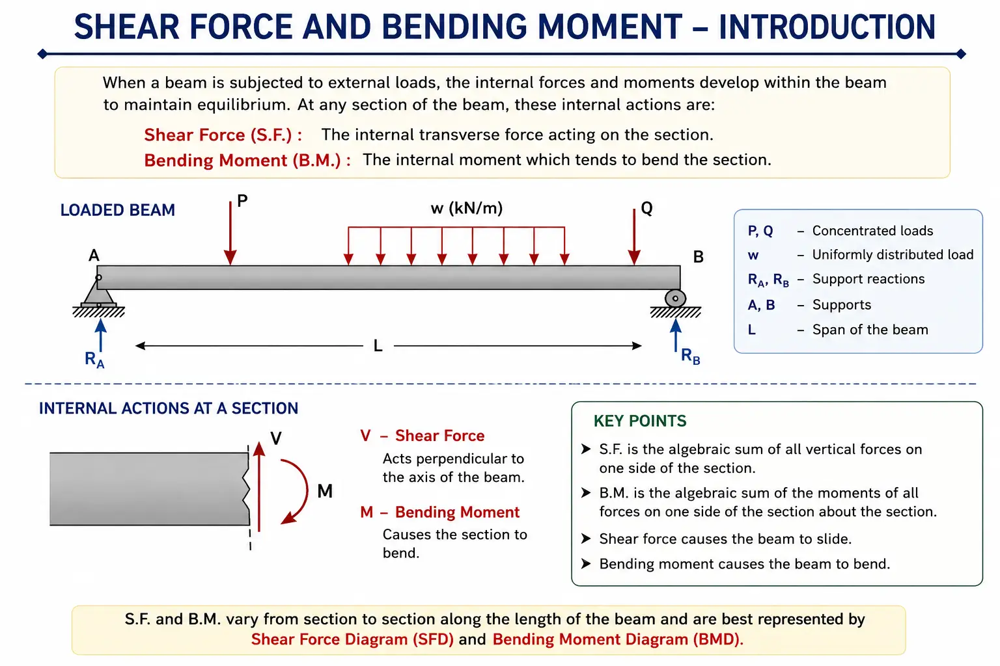
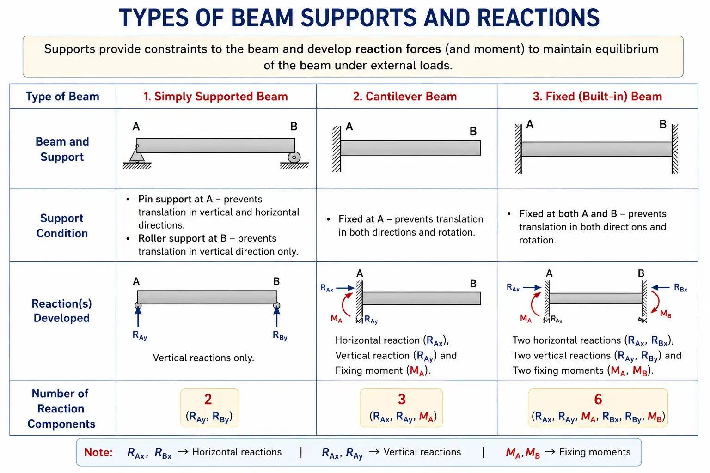
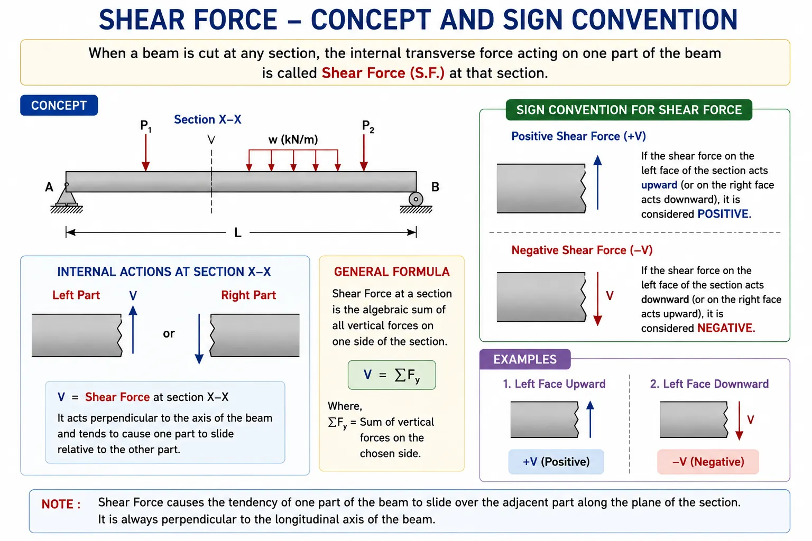
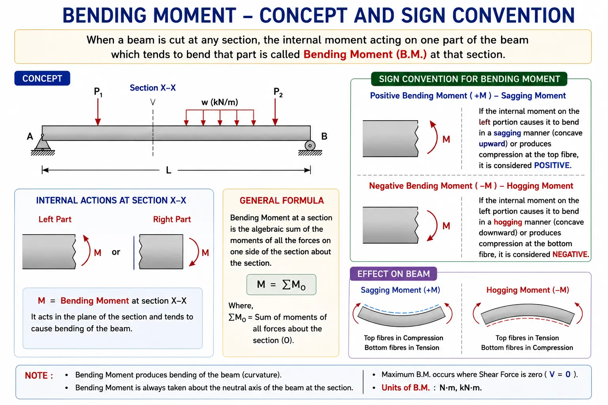
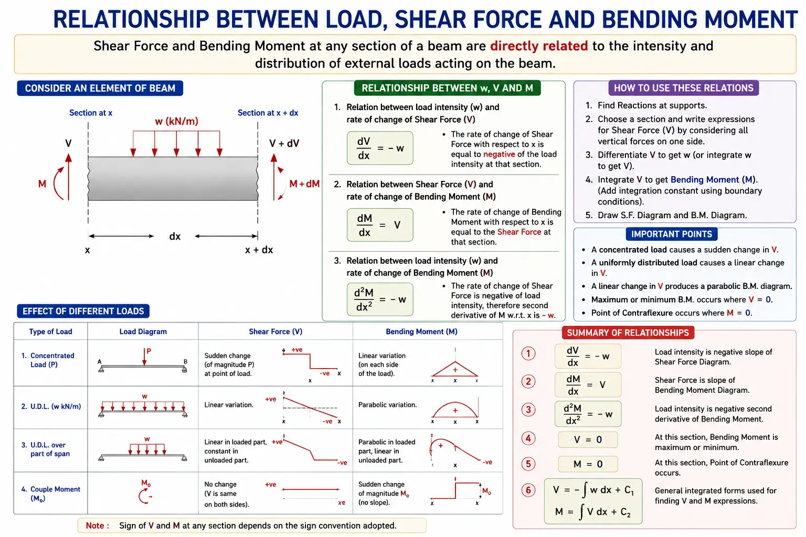
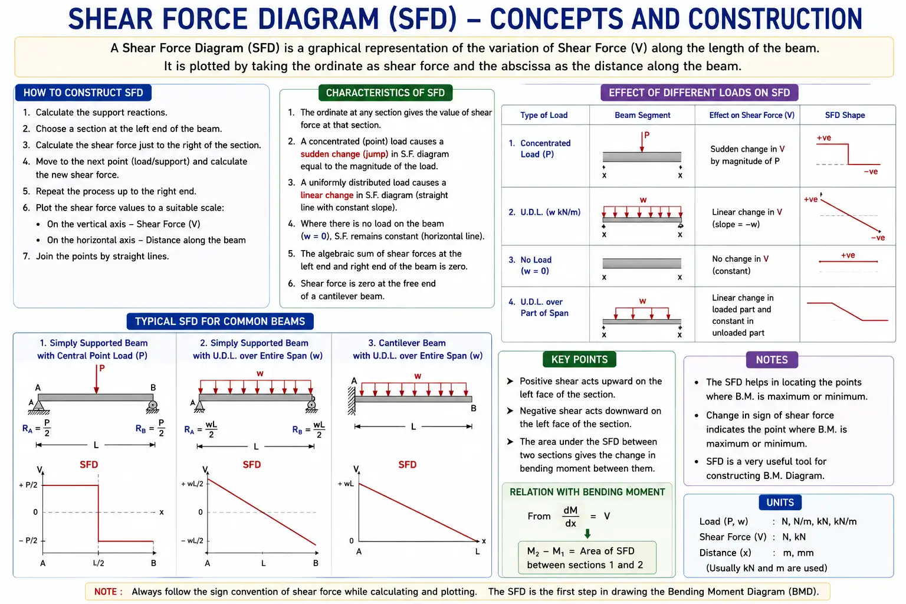
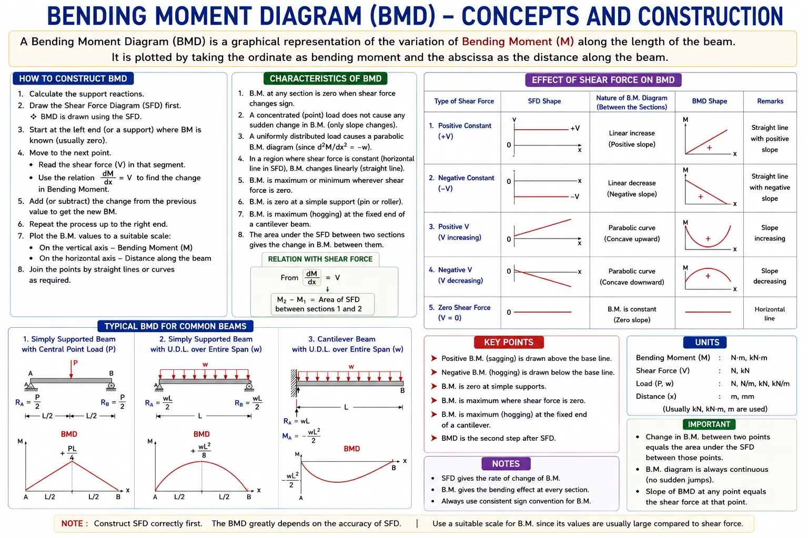
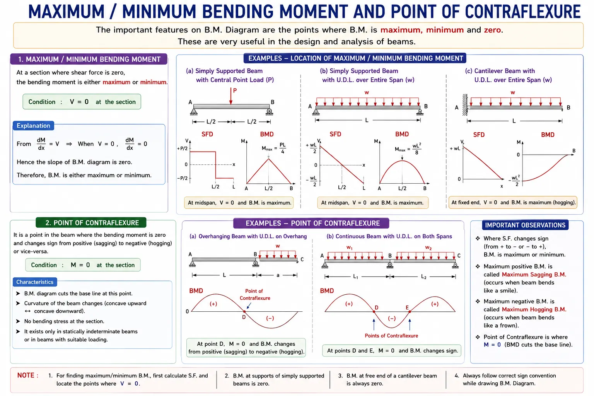
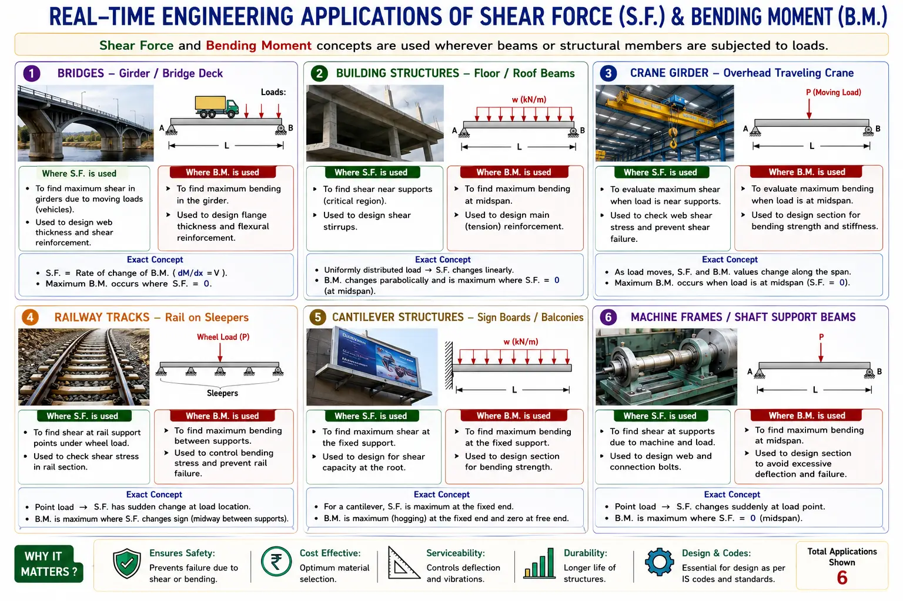

Unit 2
Shear Force and Bending Moment
In this unit, students will develop an understanding of how beams respond internally when external loads act on them. They will learn how shear force and bending moment arise at different sections of a beam, how their signs are interpreted, and how these internal actions are represented through shear force and bending moment diagrams. The unit will also help students understand how loading conditions influence the shape of these diagrams and how important locations such as maximum bending moment and points of contraflexure are identified in engineering beams.
The basic concept of internal forces developed in a beam when external loads act on it, and the meaning and engineering significance of shear force and bending moment at a section.

Common beam supports, the reactions produced by them, and how support conditions determine the external forces acting on a beam.

The meaning of shear force at a beam section and the positive and negative sign conventions used while analysing the internal shear force.

The internal bending moment developed at a section of a beam, together with sagging and hogging behaviour and the corresponding sign convention.

The relationship between the applied loading and the corresponding variations of shear force and bending moment along the length of a beam.

How the shear force varies from section to section and how the variation is represented graphically through a Shear Force Diagram (SFD).

How bending moment varies along a beam and how the variation is represented graphically through a Bending Moment Diagram (BMD).

Important locations in a beam where bending moment reaches a maximum or minimum value, and the point where the bending moment changes sign from sagging to hogging or vice versa.

Practical engineering applications showing where shear force and bending moment are important, and the specific role they play in analysing and designing beams and structural or machine components.
